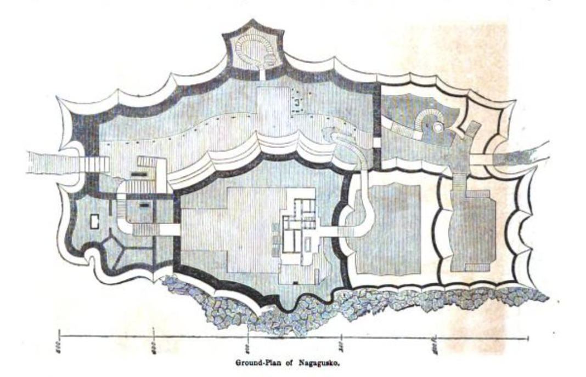

Central - Chuzan
Included in this section
- ⭐⭐Agena Castle
- ⭐⭐⭐Katsuren Castle (UNESCO 972-005)
- ⭐⭐⭐Nakagusuku Castle (UNESCO 972-006)
- ⭐⭐⭐Shuri Castle (UNESCO 972-007)
- ⭐⭐Urasoe Castle
- ⭐⭐⭐ Zakimi Castle (UNESCO 972-004)
Agena Castle (安慶名城跡)
⭐⭐ Good

Okiu fs, CC BY-SA 4.0, via Wikimedia Commons
Castle Data
- Dimensions: 55 m x 65 m
- Constructed: 14th century
- Lat/Long: 26.3809, 127.8504
- Google Maps: Agena Castle Ruins
- Elevation: 49 m
Points of Interest
- Massive, nozura (stacked stone) north-east wall
- Spectacular view of the bullring and Uruma city
- Original stone steps and walls
- Jungle adventure vibe with shade
- Agena Bullring (安慶名闘牛場)
- War Memorial (慰霊顕彰碑)
Getting There and Parking
- Distance: 34 km north of Naha / 9 km north-east of Okinawa City
- By car: Navigate to Agenachuo Koen Parking Lot, 1045 Agena, Uruma, Okinawa 904-2214, Japan. (安慶名中央公園 駐車場)
- By Bus: From the Naha Bus Terminal (那覇バスターミナル), catch #77 that is heading to Nago Bus Terminal (77 名護バスターミナル). It’s about an hour ride and get off at the Kyuagena（via Chibana）bus stop, walk north to the stop light and you’ll see a street sign for Agena Bullring, that points to the right, follow that to the Agenachuo Koen Parking Lot.
- Parking: Parking lot closed for COVID (Spots for about 60 cars)
- Admission: no charge
- Hours: 24 h
- https://www.city.uruma.lg.jp/bunka/2399
Where to Eat
- Sushiro (スシロー うるまみどり町店), 6 Chome-1-21 Midorimachi, Uruma, Okinawa 904-2215, Japan. https://www.akindo-sushiro.co.jp/menu/
- Ramen Ōzakura (ラーメン大桜 うるま店), 1 Chome-1-13 Midorimachi, Uruma, Okinawa 904-2215, Japan. https://www.oozakura.com/
Side Trip
- Chichi Gusuku (Tengen Gusuku) (天願グスク) (inside USMC Camp Courtney) - 1.6 km
- Uken Beach (宇堅ビーチ) - 3 km
- Chibana Castle Ruins (知花グスク) - 6.7 km
- Southeast Botanical Gardens 美らヤシパークオキナワ・東南植物楽園 - 6.7 km
- Katsuren Castle Ruins (勝連城跡) - 7.4 km
Maps - Agena Castle
Map data ©2023 Google
Overview - Agena Castle
This is a mountain top castle that uses the natural landscape of the river and cliffs to its advantage, and like Kakinohana Castle, it has an Indiana Jones / lost in the jungle vibe, with great views from the top. The castle is easily overlooked as it’s in the middle of town, and walking distance from the US Marine Corps Camp McTureous, being on its eastern boundary. It’s also overshadowed by the Agena Bullring, and just aching to be explored. Agena Castle is in central Okinawa, and on the east side of the island. Kin Bay is just to its north east, and the Tengan River meanders along its north side. It has a number of distinct features including nozura (stacked stone) walls, original stairways, a couple of baileys, a natural cave-like entrance, a viewing port and some interesting rock formations. It was designated as a Nationally Designated Cultural Property S47-5-165 on 15 May 1972.
On The Trail - Agena Castle
From the left or south end of the parking lot, make your way across the park lawn toward the left side of the verdant hill. You’ll soon see a cluster of monuments.

Okinawaphile, CC BY-SA 4.0, via Wikimedia Commons
The leftmost vertical stone marker says (on multiple sides):
Historical site Agena Castle Ruins, National Designated Property 15 May 1972
The concrete & tile monument with a bluish colored brass plaque says:
Agena Castle Ruins Akena Castle is said to have been built by Agena Okawa Aji around the 14th century, and is also known as Okawa Castle. Cliffs were skillfully used as castle walls, and the castle walls were built from the middle of the mountain by the Nozura method.The central part is the summit plateau. A stone stairway is installed along the slope from the lower east side to the castle gate that opens on the south side of the interior. The castle gate is partly cut down using a crack in the natural bedrock, and then further the castle gates are spaced relatively narrowly at 1.0m, and near the center of the interior there are thresholds and lintel holes on both sides for attaching doors. Chinese ceramics and earthenware from the Gusuku period have been excavated from within the castle.
Make your way into the tree covered jungle up the stairs and feel how the atmosphere changes. Advance a little more than 1/2 the way up and there’s a little landing where the trail splits. The left fork heads up to the left where you can see a bench at the top, and the right fork heads for a few more feet through the jungle and becomes the top of the thick, wide outer wall. Most castles would have signs at this point saying stay off the walls, so please use discretion and good judgment. Back at the fork on the staircase, head to the left, up the last few dozen steps to the bench.

Okinawaphile, CC BY-SA 4.0, via Wikimedia Commons
Just before you reach the bench, you’ll see a small tomb built into the right hand cliff with nuno-zumi cut limestone blocks. This style of stone work - Ashlar masonry - is different from most of the existent walls and is often reserved for important features like gates, and strongly fortified walls. It’s not clear if this is the tomb of the last Aji (ruler) of Agena castle. At the top of the staircase, take a breather on the concrete bench if you’d like, and take in the natural surroundings, the light in the trees, and the roots that seem to be hugging the old walls. When you’re ready, make a hairpin right turn and head up the last few rough steps to the inner castle gate.

Juniper, CC BY-SA 4.0, via Wikimedia Commons
The gate utilizes a low, natural stone arch, and is narrowed to about 1 m in width by more nuno-zumi cut limestone blocks along one side. My own theory is that this natural funnel would prevent horses from entering the top of the castle, and be much easier to defend. It might also help to emphasize the religious importance of the site, since most gusuku seem to have been built at utaki (holy) sites. Whether it was a military tactic, or religious-political theater, it is pretty special to squeeze through the ancient gate, and be greeted by the bright sky, vertical limestone formations that separate the two main areas (baileys). Head to the left and you’ll come close to the edge of the wall, and be rewarded with great views of Agena Bullring below and Uruma City. There’s a bench here too if you’d like to just enjoy the view and air up here. Continuing to the left, it opens up to a partially shaded grassy area with low stone walls.

Juniper, CC BY-SA 4.0, via Wikimedia Commons
If you keep curving to the left you’ll see what looks like a wide trail that heads upwards, keep going and you’ll end up climbing up the jagged limestone that will remind you of coral at low tide, up to the highest point in the castle. Stand on the bench and you’ll get a view of the Agena Middle School and USMC Camp McTureous. Head back down, and investigate this larger of the two castle open areas. Notice that most of the +600 year old stone walls that line the perimeter here are hand stacked limestone in the nozura-zumi style. When you’re ready, backtrack and check out the 2nd and smaller bailey that was to the right of the gate. While here, look for a small square hole in the wall that is an example of an opening that could be used for defending the castle with archers or possibly fire bombs.

Juniper, CC BY-SA 4.0, via Wikimedia Commons
I can imagine the original walls could have contained many such openings at advantageous positions with overlapping fields of fire, to help defend the castle. While up here, keep your eye out for a number of small shrines with offerings.

Juniper, CC BY-SA 4.0, via Wikimedia Commons
Strategically, this castle is in a great hilltop position, but has a weakness because the river would have been far below during a siege. Another weakness is it’s so close to town and the jungle has overgrown it’s walls that it’s easy to be overlooked, but this small, special castle is eagerly waiting for you to explore it.
Nakagusuku Castle (中城城跡)
⭐⭐⭐ Great

Photo by 663highland/CC BY 2.5
Castle Data
- Dimensions: 58 m x 265 m
- Constructed: 13 - 15th century
- Lat/Long: 26.2839, 127.8013
- Google Maps: Nakagusuku Castle
- Elevation: 150 m
Points of Interest
- Nakagusuku Castle is a UNESCO World Heritage Site (972-006)
- Forge Site
- Walls built in all 3 major styles (nozura, nunozura, aikatazura)
- Multiple wells
- Warrior walkways on the walls
Getting There and Parking
- By car: Navigate to Nakagusuku Castle (中城城跡), 503 Ogusuku, Kitanakagusuku, Nakagami District, Okinawa 901-2314, Japan. This will take you east of Ginowan City and MCAS Futenma, and is sandwiched between the Ocean Castle Country Club, and the Onishi Terrace Golf Club.
- By Bus: From the Aeon Mall Okinawa Rycom, take the GM (Gusuku Megurin) bus and get off at Nakagusuku Gusukuato stop. Main & South Bus Route Map
- There's parking for +30 cars and multiple spots for tour busses.
- There is a public wheel-chair accessible restroom just inside the entrance on the right.
- Admission is 400¥ for adults and 300/200¥ students and children.
- Hours: 8:30am-5pm.
- https://www.nakagusuku-jo.jp/
Where to Eat
Gabusoka Soba (我部祖河食堂 中城店), 2018-1 Kuba, Nakagusuku, Nakagami District, Okinawa 901-2401, Japan. Hours: 11am-8:30pm. http://www.gabusokasoba.com
Side Trip
Okinawa Naritazan Fukusen Temple 沖縄成田山福泉寺. 617 Ishado, Nakagusuku, Nakagami District, Okinawa 901-2403, Japan. https://okinawa-naritasan.jp
Maps - Nakagusuku Castle

Map data ©2021 Google
Overview - Nakagusuku Castle
The 215m x 80m castle overlooks Nakagusuku Bay and the Philippine Sea to the east. The south east side of the castle is a natural cliff. The castle is fairly linear running from the south east at a diagonal to the north west at an elevation of 100m. There are 6 areas (baileys) enclosed by stone walls still in this castle. The four baileys along the south side are linear, and the other two are along the north side. The majority of the castle is made from cut limestone. The top corners of the walls you will notice have rounded peaks that add to the aesthetic appeal of this castle. The back gate is a beautiful stone arch. The front gate at the top of the stairs is thought to have been built in a tower style. There are 8 sacred places of worship inside the castle, primarily on the west end. There was an iron works onsite and it was believed to be for the production of weapons.

Lithograph by Heine & Brown/Public Domain
Construction occurred from the 13-15th centuries in 2 main stages. Gosamaru was the architect of the castle and took inspiration from Nakijin Castle. The walls are built in three styles. Nozura (rubble) style, the main enclosure (bailey 1) and bailey 2 are made with the nunozumi/tofuzumi (masonry) style, similar to rectangular brickwork. The 3rd bailey on the north east end is the first wall you see from the parking lot and it is by far the thickest and it's built in the aikata (turtleback) style, you'll see the stones each have a unique shape, and fit together very tightly, this make for an extremely strong and stable wall. Wilhelm Heine, drew the castle during Admiral Mathew C. Perry's 1853 expedition to Okinawa, as "Ancient Castle of Na-Ga-Cus-Ko, Lew Chew", seen above.
On The Trail - Nakagusuku Castle
Make your way from the ample parking lot to the kiosk on the right of the path to pay. Continue down the asphalt path along the entire side of the castle, if you're lucky, catch a ride on the golf cart that ferries guests to the front gate. You'll see a black stone UNESCO World Heritage monument.

Lithograph by Heine & Brown/Public Domain
Climb the stairs, and a large grassy field opens up to you, and you'll see a signpost guiding you to the Forge Site. As you turn toward the castle, it towers overhead, and the Forge Site is at the base of the cliff slightly to the right of center.
As you face the cliffs, head to your left along the cliffs, and follow the stone path as it heads slightly uphill to the main gate. Notice how tall the walls are here as you approach. If you have the tourist map with you, this section is really small on the map, even though it's an imposing entrance. The walls here are nunozumi, and are rectangular in shape. Ahead on your right, you'll see the white marker for Nakagusuku Castle Ruins.

Photo by 663highland/CC BY-A-2.5
As you enter through the main gate area, it almost feels like a tunnel made from massive stones. As you pass through the gate, you'll see the stone walls on your right for the ramp are made in the aikata (turtleback) style, where the rocks are fitted together. You are now inside the Western bailey. This section is about 120m long and was used in the drilling of soldiers and horse riding.
Make your way up the wooden, and then stone steps to enter the gate into the Southern bailey. You'll see a number of signposts explaining the features, including a number of sacred places of prayer that are still used.
- Sacred Place of Prayer: Utuukura Hinukan (Fire Deity) - Common Name: Shuri Utuushi (Worship Area)
- Sacred Place of Prayer: Kugusuku no Oibe - Common Name: Kudaka Utuushi (Worship Area)
- Sacred Place of Prayer: Amagoi no Utaki
If you look around the walls you may notice square hole cutouts, which were used for early non-western firearms (火矢). There's a great view out to the ocean from this bailey as well. Head up the stairs and through the arched stone gate. You are now inside the 1st bailey, which was home to the Main Hall.
Lithograph by Heine & Brown/Public Domain
Turn to your right and head up the stairs to check out the great views of Nakagusuku Bay from the top of the wall. You'll see signs for:
- Main Hall Site
- Sacred Place of Prayer: Nakamori no Oibe - Common Name: Chigee Utaki
Make your way through the next arched stone gate into the 2nd bailey. As you transition from space to space you are reminded how much square footage this castle has. You'll see a sign for:
- Sacred Place of Prayer: Shiraitomi no Oibe
Make your way to the top of the wall, and walk along the warrior paths, where the sentinels would keep watch. While you're here take note of the sinuous lines that the walls have.
Follow the sign for "Route" down the wooden staircase and into the end of the West bailey. You'll see another "Route" sign at a gate that is shored up with wooden beams. On the other side of the gate, you'll see a sign for the Ufugaa Well.
Head down the stairs and into well area and notice all the green moss and ferns, this is a great place to cool off. When ready, head out of the well, and along the path. You'll see a sign for the Third Enclosure - also known as the Miigusuku - or new castle.
Head up the stairs. Notice the walls in the 3rd bailey (enclosure) are in the aikata (turtleback) style, where the stones are shaped to fit together organically. Pass through the massive arched stone back gate, and notice it's built of giant stone masonry, in the nuno style. This opens out into a large grassy area with a static model of the castle and hill top, it'll give you an opportunity to review what you've just seen and notice if you missed anything.